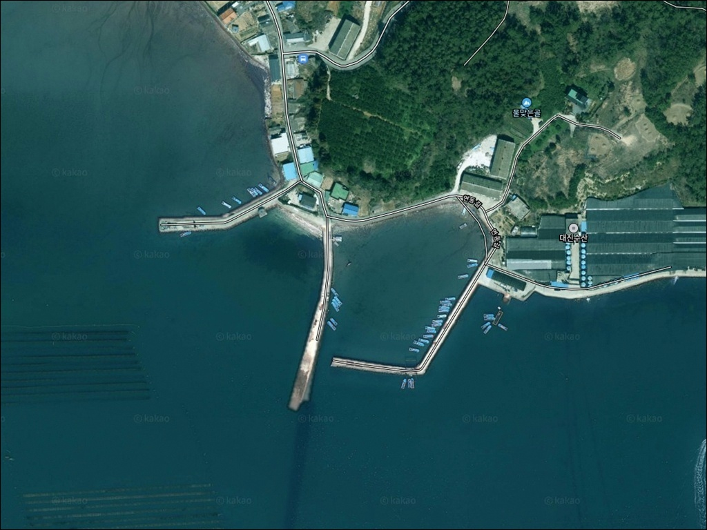
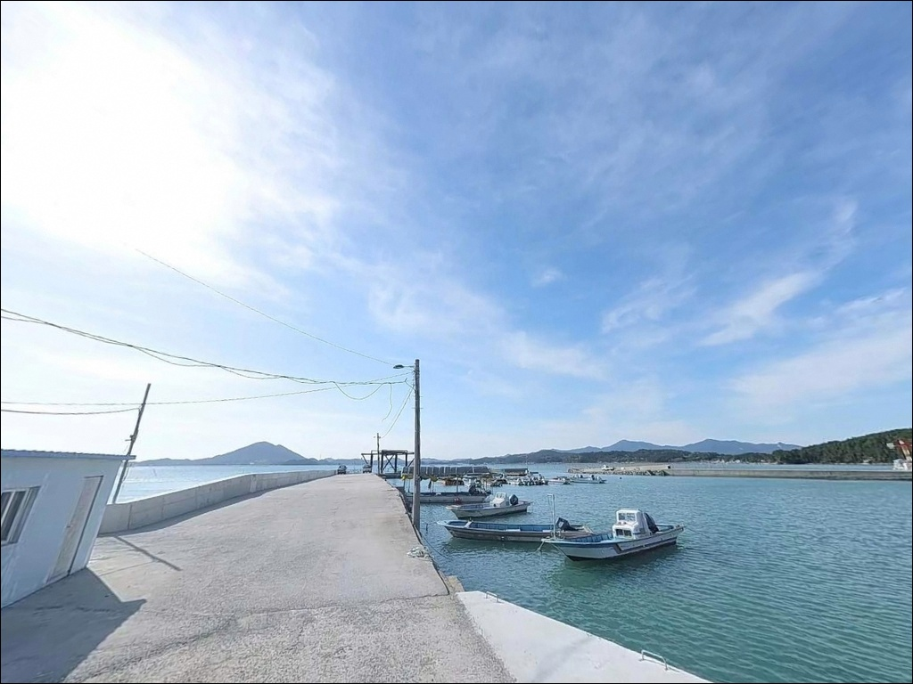
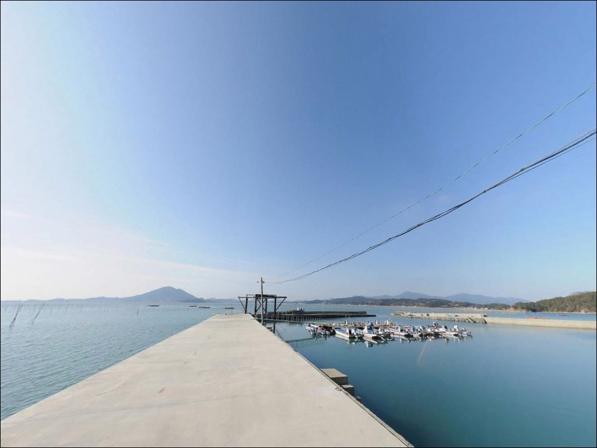
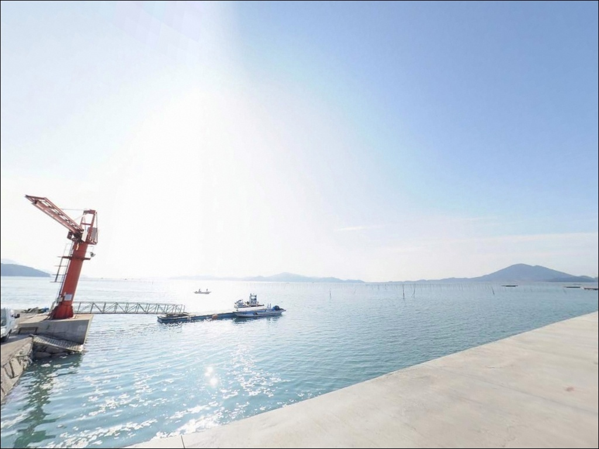
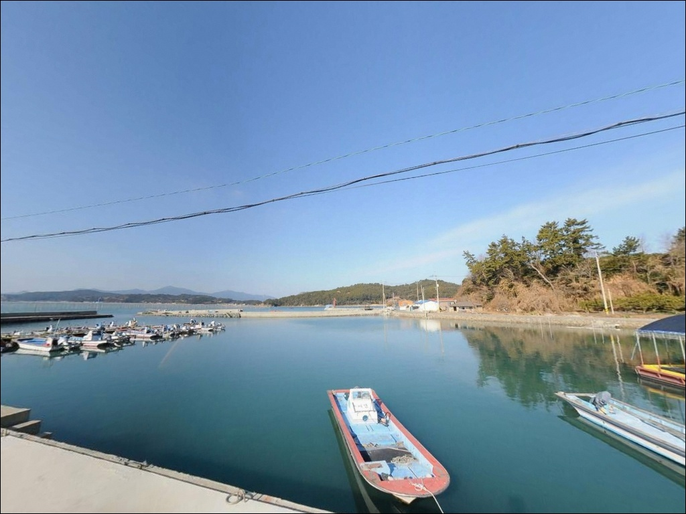
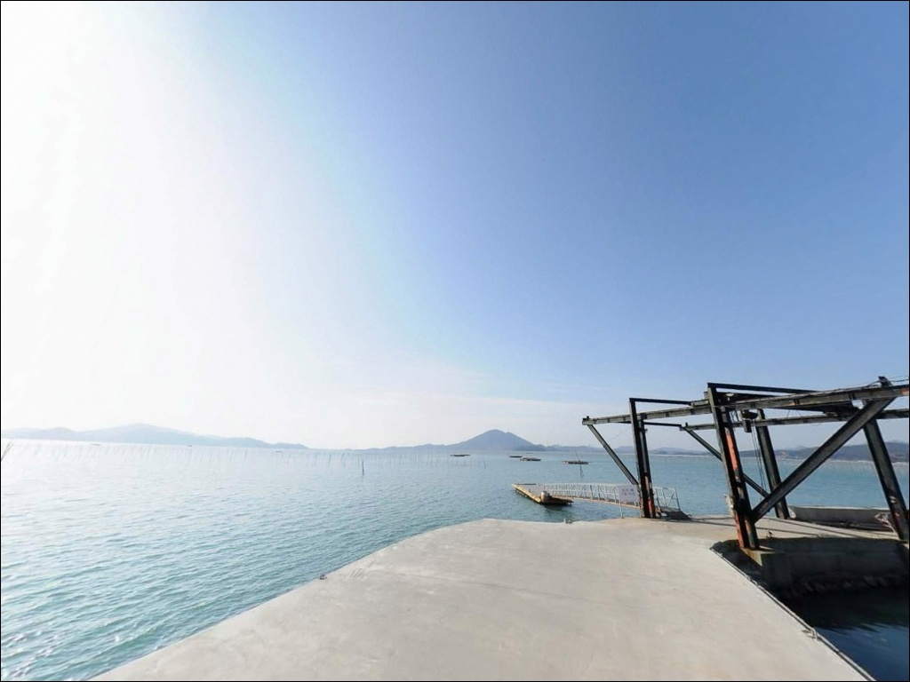
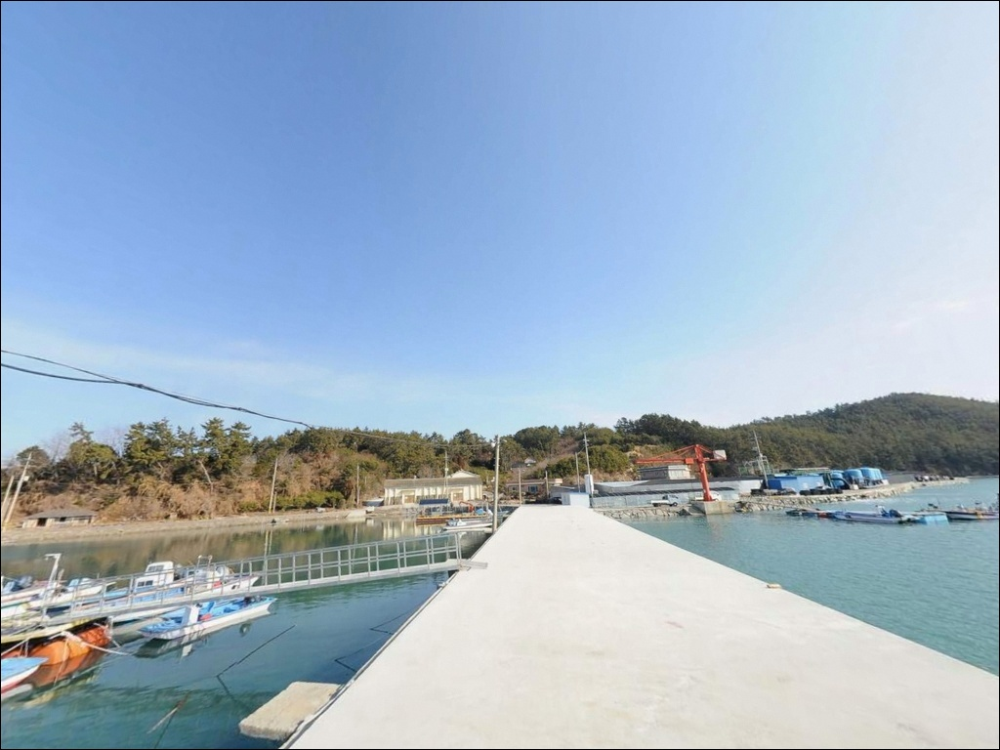
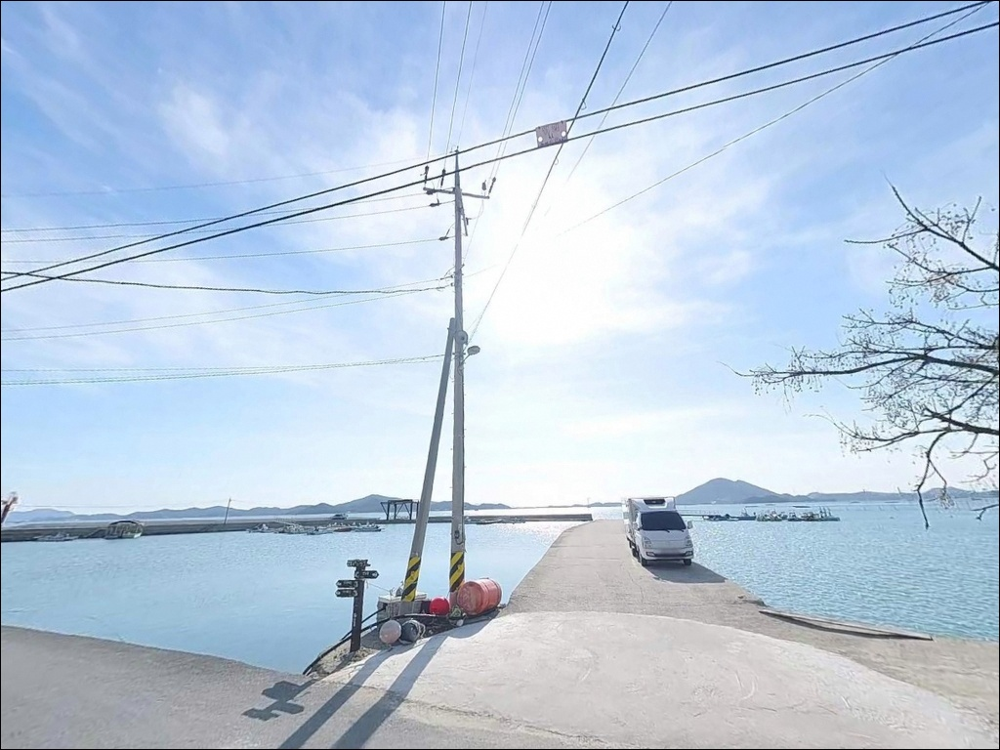
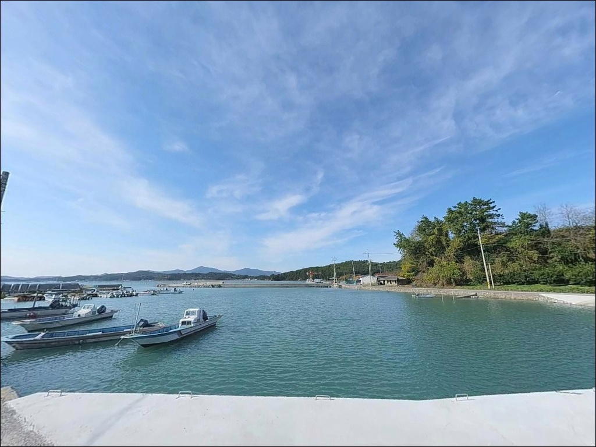

이 페이지에는 광고(제휴 링크 포함)가 있으며, 광고 링크를 통해 구매하면 운영자가 판매 수익 또는 수수료를 받을 수 있습니다. 포인트 사진: 카카오맵 스카이뷰·로드뷰. 이 페이지의 지도·사진 이미지는 카카오맵의 실제 서비스 이미지와 다를 수 있습니다.

도남리방파제
전남 완도군 고금면 도남리 1018-1
고금도와 장흥 사이 수로 길목에 자리한 방파제는
사리 전후 조류가 강해
채비 컨트롤 자체가 어려워지는 구조입니다.
물때를 모르고 사리 직전에 진입하면
원투 채비가 쓸려버려
어느 자리를 써도 바닥 탐색이 불가능한
상황이 됩니다.
도남리방파제는 고금도 동남부 해안에 위치한
약 100m 길이의 일자형 소형 방파제입니다.
외항 쪽 테트라포드와 내항 석축·콘크리트 안벽이
구분된 구조로,
끝단에서 수심이 빠르게 깊어지는
전형적인 남해 수로 길목 방파제 형태입니다.
이 글은 도남리방파제의
진입 동선, 차박 여건, 물때 판단 기준,
낚시 스타일별 공략 조건에 집중합니다.
조황 단정이나 특정 어종 보장은
이 글의 범위에 포함되지 않습니다.

고금도는 강진군 마량면과 고금대교(2007년 개통)로
육지와 연결되어 있으며,
남쪽으로는 장보고대교를 통해
완도읍과도 이어집니다.
도남리까지의 도내 도로는
시멘트 포장이 되어 있으나 차량 1대 폭으로
교행이 불가능한 구간이 있습니다.
마을 진입 전에 반대편에서 오는 차량 여부를
먼저 확인하고 들어서는 것이
기본 운전 요령입니다.
방파제 시작 지점에는 넓은 공터가 있어
차량 회차는 입구 공터에서 처리하는 구조입니다.
끝단까지 무리하게 진입하면
회차 공간이 없으므로 주의해야 합니다.
주차는 방파제 입구 우측 연안 공터를 이용합니다.
3~5대 수준의 주차 공간이 확보되어 있으며,
낚시 자리와 주차 위치 사이의
장비 이동 동선이 짧아
장비를 많이 가져오는 낚시에 유리합니다.

도남리는 민가 밀집도가 낮은 소규모 어촌 마을입니다.
야간 차량 통행이 거의 없는 편이며,
방파제 입구와 중간 지점에는
가로등이 설치되어 있어
기본적인 야간 시야는 확보됩니다.
다만 방파제 끝단부는 조명이 없어
헤드랜턴 없이는 작업이 어렵습니다.
주차 공터는 낚시 자리와 인접해 있어
차박과 낚시를 병행하기에는 동선이 짧습니다.
다만 공간이 3~5대 규모로 제한적이어서
주말이나 시즌에는
선점 여부를 미리 가늠하고 출발하는 편이
현실적입니다.
고금도와 장흥 사이 수로 길목 특성상
바람이 강한 날에는 방파제 외항 쪽이
파도 영향을 직접 받을 수 있습니다.
기상 예보 확인 없이 차박과 낚시를 동시에
계획하면 변수가 커질 수 있어,
출발 당일 아침 풍속 확인은 필수입니다.

방파제 반경 1km 이내에는
편의점이나 식당을 기대하기 어렵습니다.
식수, 얼음, 낚시 소품, 연료 모두
출발 전에 갖춰야 하는 구조입니다.
완전 자급 체제로 진입하는 것이
도남리방파제 방문의 기본 전제입니다.
반경 3km권으로 이동하면
고금면 덕암리 일대에 소형 마트와 주유소가 있습니다.
부족한 소품이나 연료를 보충할 때는
이 동선을 활용하는 편이 효율적입니다.
응급 대응은 고금면 소재지 내
고금보건지소와 고금약국 수준에서
기초 처치가 가능한 수준입니다.
고금대교를 건너 강진군 마량면으로 나가면
마량항 인근에 대형 낚시점이 있어
채비가 부족할 때 활용 가능합니다.
도남리에서 고금대교 경유 약 10km 거리입니다.

도남리방파제에서 방문 전 가장 먼저 확인할 것은
물때입니다.
고금도와 장흥 사이 수로는
사리 물때에 조류가 강하게 형성되는 구간으로,
바다타임에서 고금면 기준 물때를 확인하고
조금 전후 또는 정조 타이밍을 노려
출발 시각을 결정하는 것이 기본 전략입니다.
방파제 외항 쪽 테트라포드 구간에서 낚시할 때는
반드시 구명조끼와 갯바위 신발을 착용합니다.
테트라포드 위 이동은 최소화하고,
가능하면 2인 1조 체계를 유지하는 것이
기본 안전 원칙입니다.
낚시 후에는 채비 포장재와 낚싯줄을
현장에서 직접 수거하여 반출합니다.
마을 어업 시설 특성상 어선 조업 동선이 있습니다.
주차 위치와 낚시 자리 모두
어선 이동을 방해하지 않는 범위에서 잡아야 하며,
야간에는 소음을 최소화해
주민 생활에 피해를 주지 않는 것이
방문자의 기본 매너입니다.

도남리방파제의 핵심은
고금도와 장흥 사이 수로를 정면으로 바라보는
위치 구조입니다.
방파제 끝단에서 중들물 기준
수심 5~7m권이 유지되며,
끝단을 벗어나면 수심이 빠르게 깊어지는
수심 급변 구간이 형성됩니다.
외항 쪽은 테트라포드가 배치된 구조로
테트라포드 사이 암초 경계면이 발달해 있습니다.
이 구간은 소형 루어 채비가 잘 맞는 지형이며,
바닥 구조가 복잡해
밑걸림에 대비한 여분 채비 준비가 필수입니다.
내항 쪽 석축 안벽 구간은 구조가 단순해
찌낚시나 가벼운 원투 운용이 가능합니다.
수로 조류가 방파제 끝단을 지나는 구조는
회유성 어종이 통과하는 길목 역할을 합니다.
조류가 살아 있는 타이밍에 방파제 끝단을
집중 공략하는 방식이
이 포인트 지형과 잘 맞습니다.
출조 전에 고금도 일대 조황을
검색해 두시기 바랍니다.

도남리방파제에서 가장 효율적인 방식은
원투낚시입니다.
방파제 끝단에서 외항 정면 또는
수로 방향으로 투척하면
바닥층 어종을 노리기에 유리한 조건이 갖춰집니다.
도다리, 보리멸, 감성돔이
이 일대 해역에서 기대해 볼 수 있는 어종입니다.
루어낚시는 외항 테트라포드 사이 구멍치기와
석축 경계면을 겨냥한 지그헤드 게임이
이 지형에 잘 맞습니다.
볼락과 우럭 계열 락피시류가
테트라포드 사이 공간을 서식처로 삼기 때문에
소형 지그헤드 리그를 천천히 긁는 방식이
유효합니다.
에깅은 가을 시즌에 활용 가능합니다.
방파제 외항권을 향해 에기를 멀리 보낸 뒤
조류 흐름에 태워 흘리는 방식으로 운용하면
갑오징어와 주꾸미 접근 구간이 만들어집니다.
수로 조류가 흐르는 시간대에
끝단에서 에기를 흘려보내는 운용이
이 포인트 구조에 어울립니다.

도남리방파제 조류가 너무 강하거나
주차 공간이 여의치 않을 때는
상정항 방파제가 첫 번째 대안입니다.
북서쪽으로 약 6~7km 거리에 있으며
규모가 더 크고 발판이 안정적이어서
도남리방파제보다 다양한 자리 선택이
가능합니다.
고금대교를 건너 강진군 마량면 방면으로 나가면
마량항 방파제가 있습니다.
해역 조건이 고금도 연안과 유사하며
낚시 포인트로 공식 등록된 곳입니다.
도남리에서 약 10km 거리로,
조황 여건을 넓혀 탐색할 때
활용할 수 있는 대안 동선입니다.
차박 중심으로 이동이 필요하다면
고금대교 휴게소가 동쪽 약 8km 거리에 있습니다.
주차 공간이 넓고 공중화장실 이용이 가능해
도남리방파제보다 편의 여건이 나은 편입니다.
낚시 후 이동하거나 다음 날 출발 기점으로
활용하는 동선이 자연스럽습니다.

원투낚시나 루어낚시를 즐기는 낚시인이라면
도남리방파제의 수로 길목 구조는
잘 맞는 지형 조건입니다.
방파제 끝단 수심 5~7m권과
테트라포드 암초 경계면이 복합 공략을 가능하게 하며,
조류가 살아 있는 타이밍에 제대로 진입하면
기대 이상의 자리가 만들어지는 포인트입니다.
반면 사리 전후 조류 세기를 모르고 진입하거나,
편의시설 없는 구조를 모르고 출발하면
허탕이 되기 쉬운 현장이기도 합니다.
물때 확인, 자급 준비, 진입로 사전 점검,
이 세 가지가 갖춰진 상태로 간다면
아직 많이 알려지지 않은
고금도 연안 포인트를 조용히 즐길 수 있습니다.
낚시를 마친 뒤 입구 공터에 자리를 잡고
고금도 수로 방향으로 하룻밤 머무는 차박이라면,
편의시설 없는 자급 준비와
바람 방향 확인만 갖추면
낚시와 차박을 동시에 소화하기 좋은
출조가 됩니다.